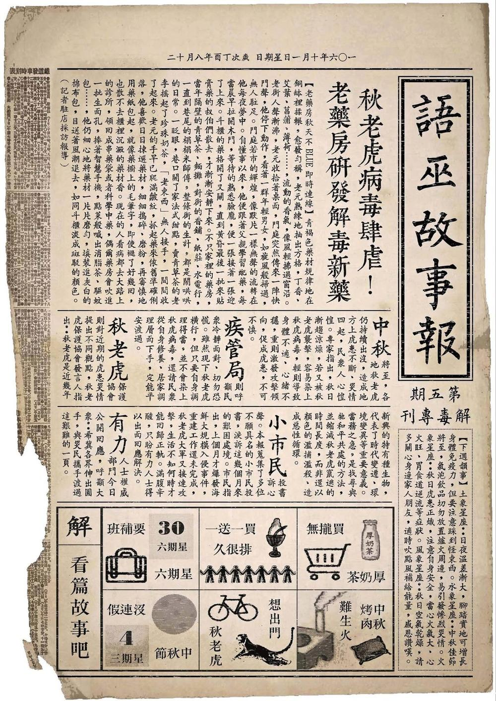

故事
柑仔店
店門口
長篇溜溜球
短篇泡泡糖
老闆講古
老闆碎碎念
語巫故事報
文化紀錄
出版品
故事島
🔍
🌙
店門口
›
語巫故事報
›
語巫故事報
第五期──老藥房解毒專刊
2017-10-01

秋老虎病毒肆虐！老藥房研發解毒新藥
秋虎大軍來襲，大家塊陶～
別忘了，避難的時候、Blue的時候，
來故事柑仔店，看篇故事吧！
♡
喜歡這篇故事
分享出去
FB
LINE
X
📤
🔗
同系列還有這幾瓶
看整個系列（27 瓶）→
第二期──鬼月特刊
第三期──廟宇特刊
第六期──香料專題
第七期──地點揭密
第八期──火光專題
第十期──險地特刊
上一篇
第四期──迌專刊
下一篇
第六期──香料專題
留言板